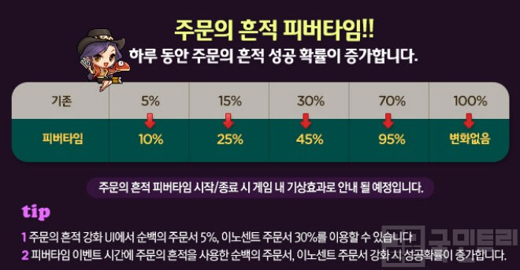

- - 업그레이드 시 유저가 선택하며 보통 성공률이 낮은 주문서일수록 성공 시 장비에 부여되는 옵션이 더 좋습니다.
-
- 특별한 주문서를 통해 실패로 차감된 업그레이드 가능 횟수를 회복하거나 초기화할 수 있습니다.
이름 효과 주문의 흔적 순백의 주문서 5% 주문서 실패로 차감된 업그레이드 가능 횟수 1회 회복 2,000개 이노센트 주문서 30% 잠재능력을 제외한 대상 아이템의 모든 옵션을 표준 능력치로 초기화 5,000개 아크 이노센트 주문서 30% 잠재능력, 스타포스를 제외한 대상 아이템의 모든 옵션을 표준 능력치로 초기화 10,000개
주문의 흔적을 이용한 장비 업그레이드
☆TIP : 매주 일요일 주문의 흔적 피버타임!!
